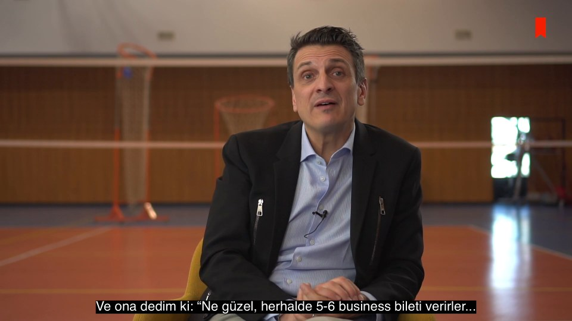
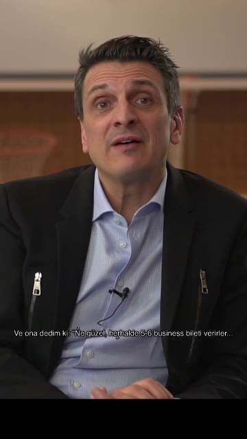

Film
Film 1:15
01 Clip pipeline
- AssemblyAI Transcriptto
- 45–90 s Clip rangeto
- LLM · sheets Camera planto
- OpenCV 9:16 renderto
- web app Shorts feed
- word-level timestamps · cut on sentence bounds
- QA contact sheets · at most 3 renders
- static site · no build
02 Results
18 clips · 120 shots · 131 plan segments
Camera mode share of the 131 segments.
A single crop would fit only the first three; 1 in 5 segments needed the whole frame (fit / stack).
6 to 18
Courses to shorts
20.1 min of vertical video
12 · 6
English · Turkish
English clips lead the feed
48–88 s
Clip length
6 under 1 min · 12 over
From 16:9 to 9:16
g57554-business · t=30 s · track


- Picture a 9:16 window that follows the face
- Subtitle the full band, re-drawn on top
What's next
- Publish the feed clips on a CDN, page from dist/
- Shared likes & comments needs a backend · today per browser
- Scale to the library more transcripts to more shorts